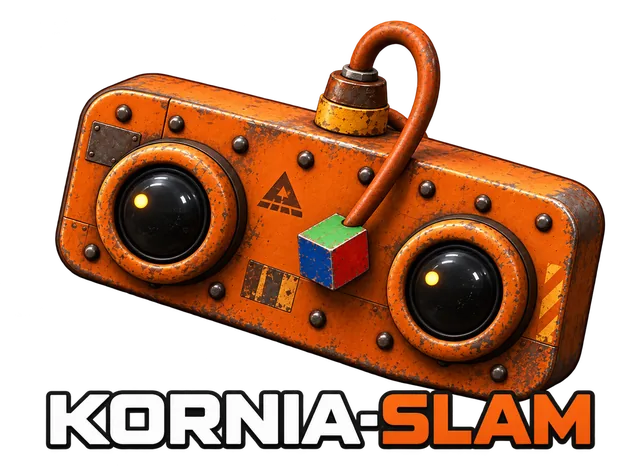

kornia-slam
Real-time visual-inertial SLAM in Rust, built on kornia-rs.
v0.1, early release. The API will change between minor versions.
Stereo + IMU at 2× speed. Each shows the map and trajectory, the left camera with its ORB keypoints, and a follow view.
Features
- Monocular, stereo, and visual-inertial ORB SLAM
- Local bundle adjustment, including visual-inertial BA
- Place recognition (DBoW2) and loop closure with pose-graph optimization
- Sources: EuRoC, Hilti, MCAP, OAK-D, UVC webcams
- Terminal UI, Rerun streaming, ATE/RPE evaluation
Quick start
Download a EuRoC sequence (ASL format), then:
git clone https://github.com/kornia/kornia-slam && cd kornia-slam
# monocular
cargo run --release -p kornia-slam-app -- euroc --data /path/to/MH_01_easy
# stereo + IMU, with evaluation against ground truth
cargo run --release -p kornia-slam-app -- euroc --data /path/to/MH_01_easy --stereo --imu --evaluateMore sources and options: apps/kornia-slam-app.
Integrations
- Copper: stereo visual-inertial odometry as Copper tasks via cu-kornia-vio. See INTEGRATIONS.md for setup, graph wiring and timing requirements.
Development
With Pixi, which sets up the toolchain for you:
pixi run rust-lint # fmt + clippy + check
pixi run rust-test # workspace tests
pixi shell # drop into the environmentOr with a Rust toolchain (1.91+; the library crates alone need 1.89) installed yourself:
cargo fmt --all -- --check
cargo clippy --all-targets -- -D warnings
cargo test --workspaceLicense
Apache-2.0